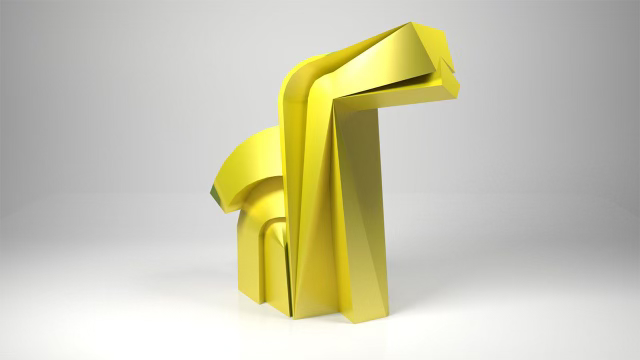
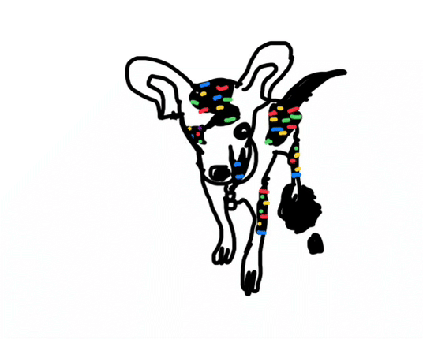
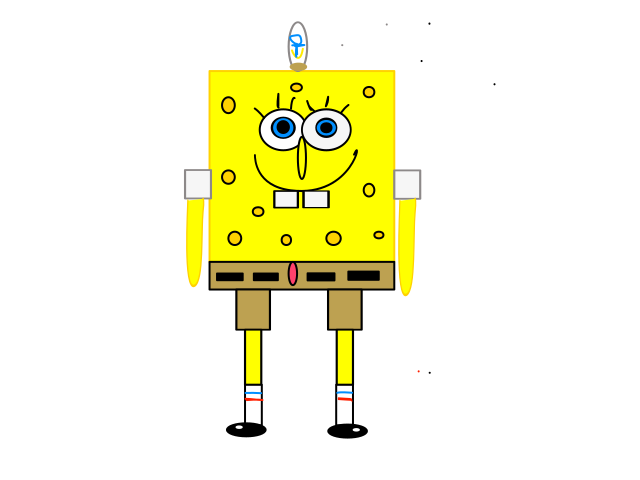

la web de la perrita chiguagua .com.cdmx
jose fina la perrita y su hermana moli una perra de 9 años de edad y tabien ay tortugas pajaros flores pollitos
josefina
a jose fina le gusta la torre del caballito cdmx porque esta cerca del monumento ala revolucion y hay fuentes de piso bairalinas
↓ aqui esta la torre del caballito su monumento favorito
jose fina glich pibby
bob esponja de graficos vectoriares svg
